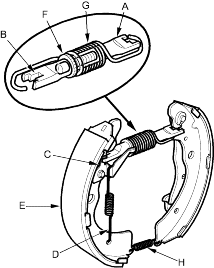
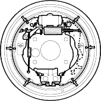
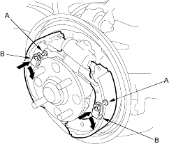
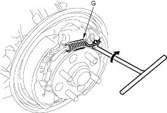

- Install the self-adjuster lever (C) and self-adjuster spring (D) on the front side brake shoe (E).

- Assemble the brake shoes with the clevis A, adjuster bolt (F), clevis B, upper return spring (G), and lower return spring (H).
NOTE: Fully turn the adjuster bolt into the clevis A.
- Apply Molykote 44MA grease onto the sliding surfaces as illustrated. Wipe off any excess. Do not get grease on the brake linings.
  |
Sliding surfaces |
 O O |
Backside edge of the shoe |

- Install the shoe assembly on the backing plate fitting the top of the shoes onto the wheel cylinder pistons and the bottom of the shoes onto the locating plate.
- Install the tension pins (A), and secure with the retainer springs (B) by pushing it and turning each pin.

- Hook the upper return spring (G) with a tool.
